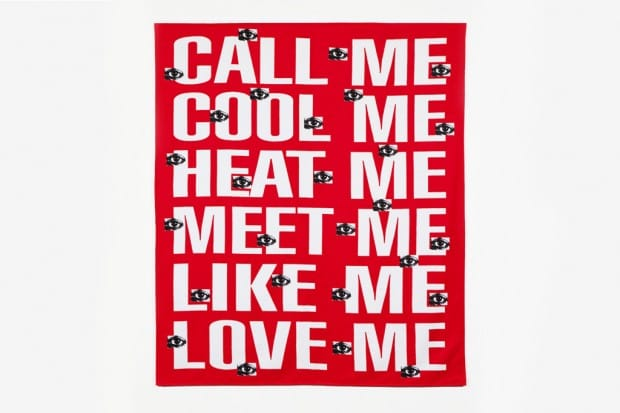

Sense Of Flying
Блин, офигенско!
Блин, офигенско!

Какое клевое пляжное полотенце :)
Отличная тема :)
Блин, кайф какой!!!
We're here to get each other through this thing, whatever it is. — Mark Vonnegut.
Понравилось с баша:
xxx: что такое психотип?
yyy: что-то вроде формы правления тараканов в голове.
Очень мне нравится эта тема с "подвешенным кофе" :)
— А тебе, когда тебе бывает грустно?
Она сидела у стола и рисовала на бумажке маленьких человечков. Пять палочек и кружочек. Много маленьких человечков, много кружочков и целая куча маленьких палочек.
— Мне? Ну, например, мне бывает грустно, когда ты ходишь-ходишь и заходишь случайно куда-то, где был когда-то давно. С тех пор уже все изменилось, но ты узнаешь это место. Ты здесь был когда-то. Это, знаешь, как в детстве. Ты каждое лето едешь по городу на такси в конце лета и видишь как все вокруг изменилось. На самом деле, все осталось, как прежде, но ты не помнишь детали и тебе кажется, что все немного другое. Такое странное чувство. И вот сейчас, в этом дворе, ты, как тогда, в детстве, замечаешь детали, которые успел уже позабыть. И эти детали рождают в тебе воспоминания. И тебе становится радостно и грустно одновременно. Радостно от приятных воспоминаний и немного грустно от того, что этого больше нет.
Она перестала чертить человечков и теперь рисовала вокруг них квадратики. И я представил себе, что если посмотреть на этот лист издалека, то он будет похож на многоквартирный дом, все жители которого прильнули одновременно к окнам и смотрят на меня. А я стою внизу и у меня это чувство из детства. И мне от этого немного неловко.
— Но ведь это светлая грусть?
— Конечно, это самая светлая грусть на свете.
Я отвернулся от жителей многоквартирного листика-дома и пошел на кухню заваривать чай.
А восьмой сезон "Друзей" еще круче семи предыдущих. Особенно, если смотреть на английском :)